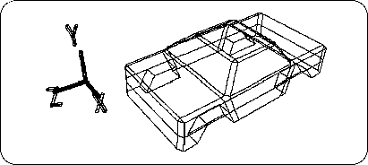
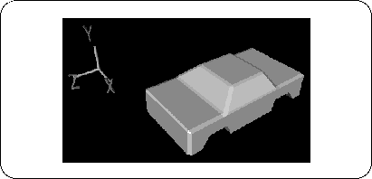
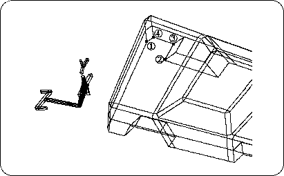

Return to previous page | Return to menu ｜ Go to next page
Shape up the car.
First, switch to Multi mode and select all four objects “cyl”, “cyl2”, “cyl3”, “cyl4” on the schematic screen (enclose with Spacebar + Left Mouse Button ).
[Display] → [Hide] → [Toggle Selection]
Please run the. I think all the tires are hidden (Figure 3-53).
Switch back from Multi mode to Single mode and select “cube” (body).
[Info] → [Selection]
Change from “Automatic Discontinuity” to “Faceted”.


First of all, make this because there is no bottom.
First, look at the figure below (Figure 3-55).

Make a polygon in the numbered place.
[Mesh] → [Polygon]
Select